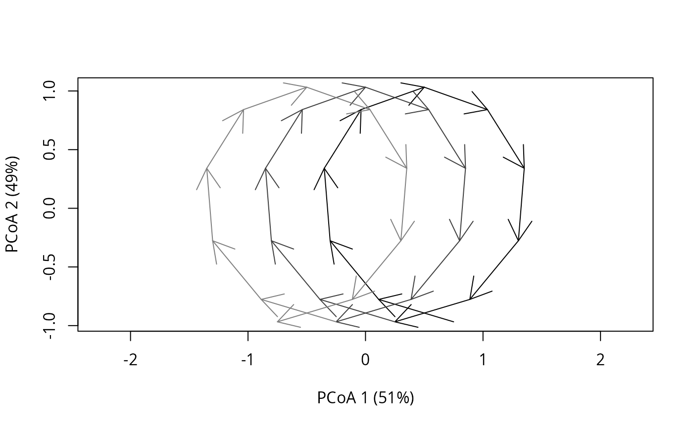
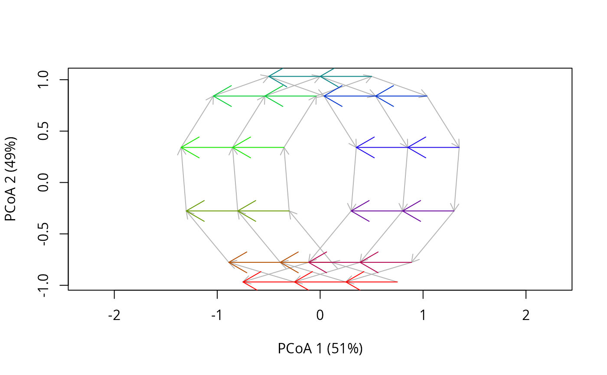
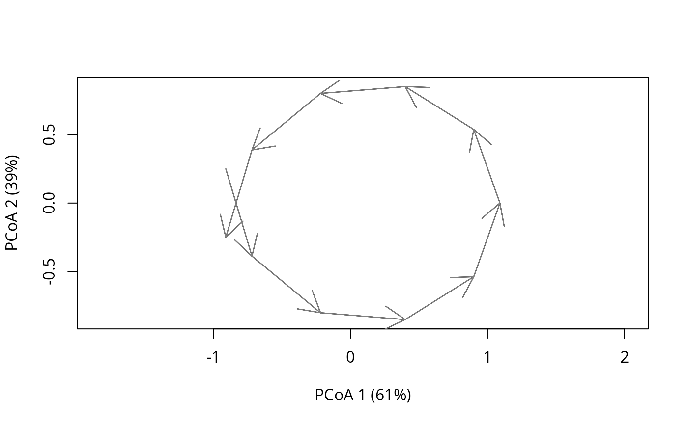

Plotting functions for Cyclical Ecological Trajectory Analysis:
Function
cyclePCoAremoves unwanted points (see details) and performs principal coordinates analysis (cmdscale) and draws cycles in the ordination scatterplot.Function
fixedDateTrajectoryPCoAperforms principal coordinates analysis (cmdscale) and draws fixed date trajectories in the ordination scatterplot.
Usage
cyclePCoA(
x,
centered = FALSE,
sites.colors = NULL,
cycles.colors = NULL,
print.names = FALSE,
print.init.points = FALSE,
cex.init.points = 1,
axes = c(1, 2),
...
)
fixedDateTrajectoryPCoA(
x,
fixedDates.colors = NULL,
sites.lty = NULL,
print.names = FALSE,
add.cyclicalTrajectory = TRUE,
axes = c(1, 2),
...
)Arguments
- x
The full output of function
extractCyclesorextractFixedDateTrajectoriesas appropriate, an object of classcyclesorfd.trajectories.- centered
Boolean. Have the cycles been centered? Default to FALSE.
- sites.colors
The colors applied to the different sites. The cycles will be distinguished (old to recent) by increasingly lighter tones of the provided colors.
- cycles.colors
The colors applied to the different cycles. Not compatible with
sites.colors.- print.names
A boolean flag to indicate whether the names of cycles or fixed-date trajectories should be printed.
- print.init.points
A boolean flag to indicate whether an initial point at the start of cycles should be printed (useful to spot the start of cycles in graphs containing many trajectories).
- cex.init.points
The size of initial points.
- axes
The pair of principal coordinates to be plotted.
- ...
Additional parameters for function
arrows.- fixedDates.colors
The colors applied to the different fixed dates trajectories. Defaults to a simple RGB circular color palette.
- sites.lty
The line type for the different sites (see
par,"lty").- add.cyclicalTrajectory
A boolean flag to indicate whether the original cyclical trajectory should also be drawn as background.
Value
Functions cyclePCoA and fixedDateTrajectoryPCoA return the results of calling of cmdscale.
Details
The functions cyclePCoA and fixedDateTrajectoryPCoA give adapted graphical representation of cycles and fixed-date trajectories using principal coordinate analysis (PCoA, see cmdscale).
Function cyclePCoA handles external and potential interpolated ecological states so that they are correctly taken in account in PCoA (i.e. avoiding duplication, and reducing the influence of interpolated ecological states as much as possible). In case of centered cycles, the influence of these ecological states will grow as they will not correspond to duplications anymore.
In case of centered cycles, the intended use is to set the parameter centered to TRUE.
References
Djeghri et al. (in preparation) Going round in cycles, but going somewhere: Ecological Trajectory Analysis as a tool to decipher seasonality and other cyclical dynamics.
Examples
#First build a toy dataset with:
#The sampling times of the time series
timesToy <- 0:30
#The duration of the cycles (i.e. the periodicity of the time series)
cycleDurationToy <- 10
#The sites sampled (only one named "A")
sitesToy <- rep(c("A"),length(timesToy))
#And prepare a trend term
trend <- 0.05
#Build cyclical data (note that we apply the trend only to x):
x <- sin((timesToy*2*pi)/cycleDurationToy)+trend*timesToy
y <- cos((timesToy*2*pi)/cycleDurationToy)
matToy <- cbind(x,y)
#And express it as distances:
dToy <- dist(matToy)
#Make it an object of class trajectory:
cyclicalTrajToy <- defineTrajectories(d = dToy,
sites = sitesToy,
times = timesToy)
#And extract the cycles and fixed date trajectories:
cyclesToy <- extractCycles(x = cyclicalTrajToy,
cycleDuration = cycleDurationToy)
fdTrajToy <- extractFixedDateTrajectories(x = cyclicalTrajToy,
cycleDuration = cycleDurationToy)
#CETA plotting functions:
cyclePCoA(cyclesToy)

fixedDateTrajectoryPCoA(fdTrajToy)

#After centering of cycles, set parameter centered to TRUE in cyclePCoA():
cent_cyclesToy <- centerTrajectories(cyclesToy)
cyclePCoA(cent_cyclesToy, centered = TRUE)
